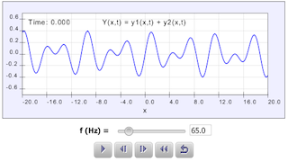

This simulation shows plots of two sound waves as functions of position, and the result of adding them together. Students can change the frequency of one the waves. When the frequency changes, the wavelength must also change to maintain the wave speed of 343 m/s. Students can measure this difference, and observe the change in the sum of the two waves.